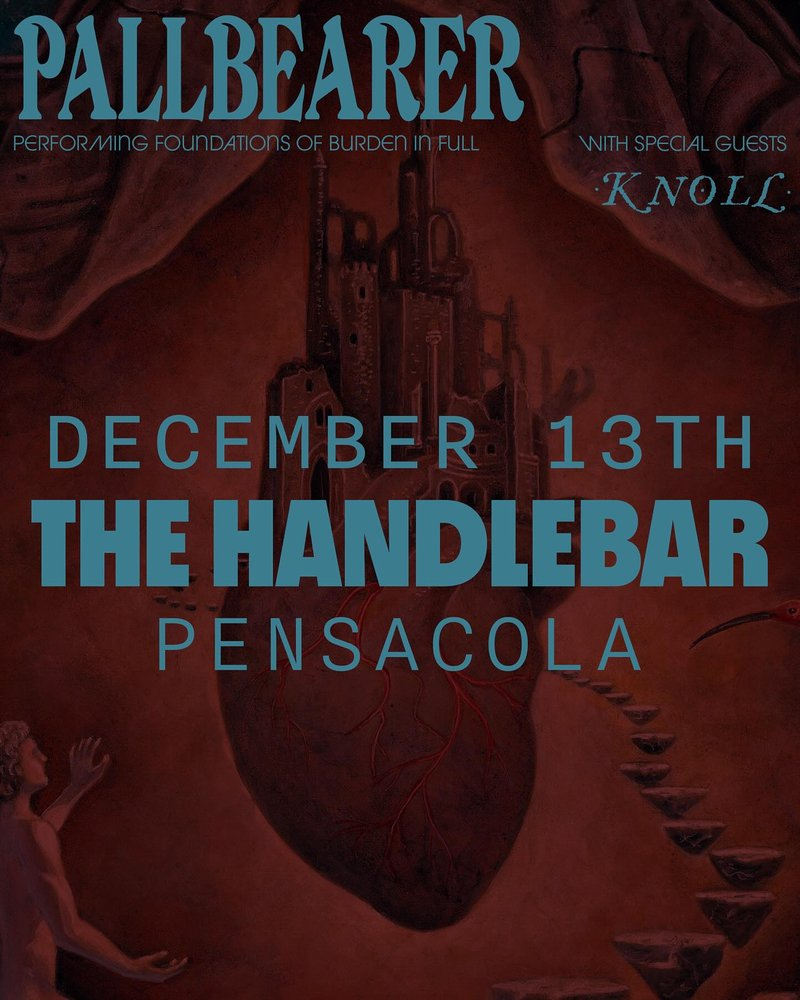

Pallbearer, Knoll
Just announced! We are PUMPED to bring @pallbearerdoom playing “Foundations of Burden” along with @knollgrind this December 😱 tickets on sale now! - Pallbearer’s Foundations of Burden (2025 Redux) is a meticulous sonic reconstruction of their transformative, landmark 2014 album. The newly remixed and remastered version arrives digitally on Nov. 7, with physical editions (2xLP and CD) available on Dec. 5. “During the writing and preparation for Foundations, everything was ephemeral and we were practically feral,” recalls bassist/vocalist Joseph D. Rowland. “We had no real practice space, we barely had a single working computer between the four of us. Our demos of the record consisted of something barely discernible from white noise. Nevertheless, we knew we were working towards building a set of songs we were deeply enthusiastic about.” More than a decade later, Pallbearer seized the opportunity to revisit the record from the ground up. Over the past year, the band meticulously reconstructed the album from the original sessions. “In the time since then, we have played most of the songs from Foundations more times than we can count, and they remain some of our favorites,” Rowland continues. “The songs have grown with us. And while we hold a deep love and attachment to what we created in 2014, we also gained a fuller understanding of how we would want to re-present them if we had a chance. After years of discussion, listening and learning, we found ourselves in the position to fulfill that vision.”